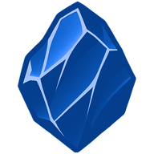
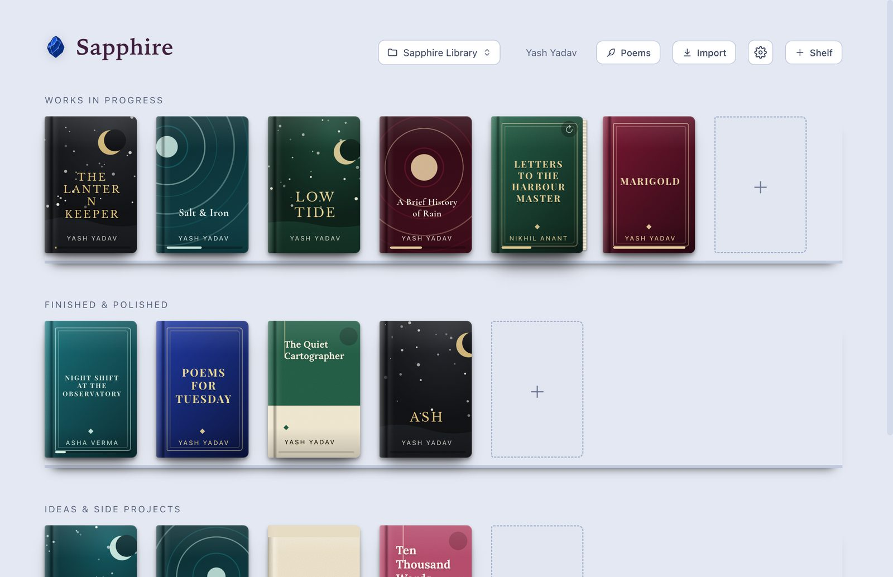
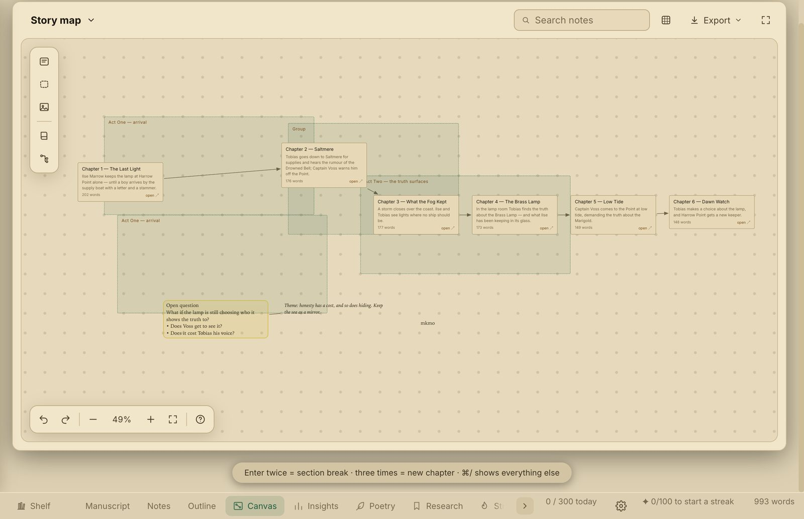

SapphireSapphire is a free writing studio for Mac and Windows. Your manuscript, your poems, a freeform canvas and your research live in one folder on your own computer. No account. Nothing uploaded.

Every book gets a cover, chapters, notes and an outline. Arrange them on shelves like the real thing.
Drop notes anywhere, connect them, group them, and send a scene to a chapter. For plots, characters and mess.
Sonnet, haiku, villanelle and more, with form guides, collections and a signature at the foot of the page.
Words per day, goals and a gentle streak. Choose which charts you see.
Keep links, quotes and images beside your draft. Prepare query letters and synopses.
Light and dark themes, fonts, typewriter mode and ambient sound. Every shortcut can be changed.
A vault is a folder you choose. Books, poems and exports are saved there as plain files, with a daily backup. Move it, sync it or back it up like any folder. Sapphire never sends your writing anywhere, and a passcode lock is built in if you share your computer.
When a new version comes out, Sapphire tells you and takes a safety copy of your vault before it updates.

Sapphire is new and independent, so your computer will ask you to confirm it the first time. This is normal and takes a few seconds.
Each release lists a SHA256 checksum file on the releases page. Compare it with your download if you like.
I made Sapphire. If it helps your writing, you can support it with any amount you like. It helps me keep improving it, and it is always optional.
UPI: 9996893881@sbi
Inside Sapphire you can also scan a QR code from Settings or the Support button.